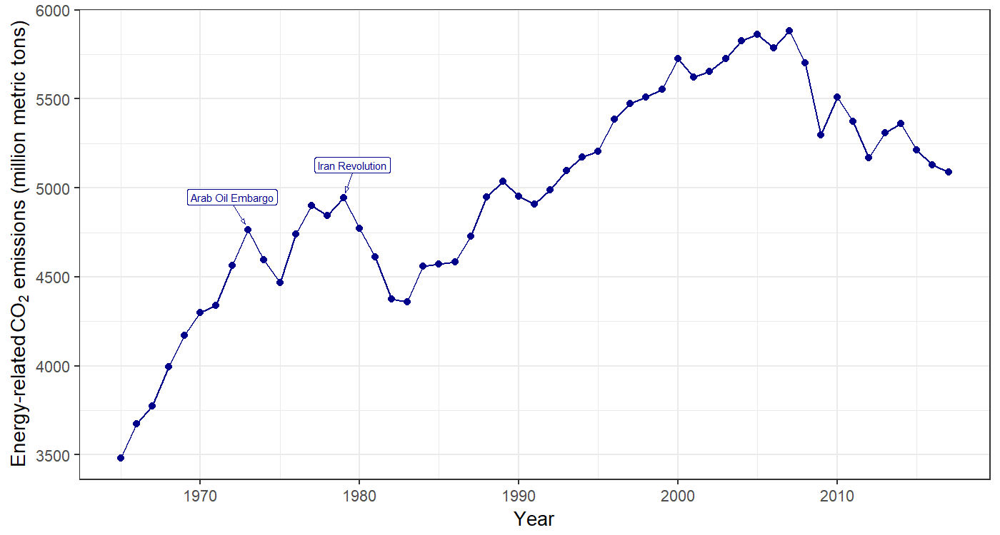
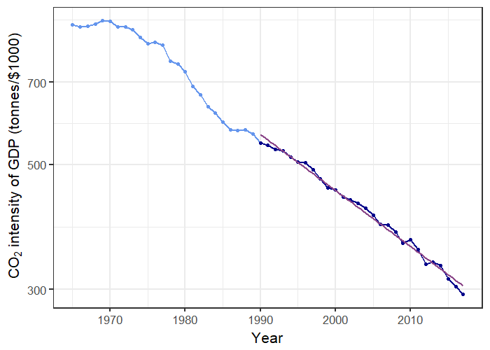
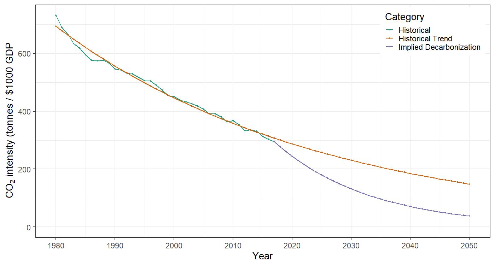
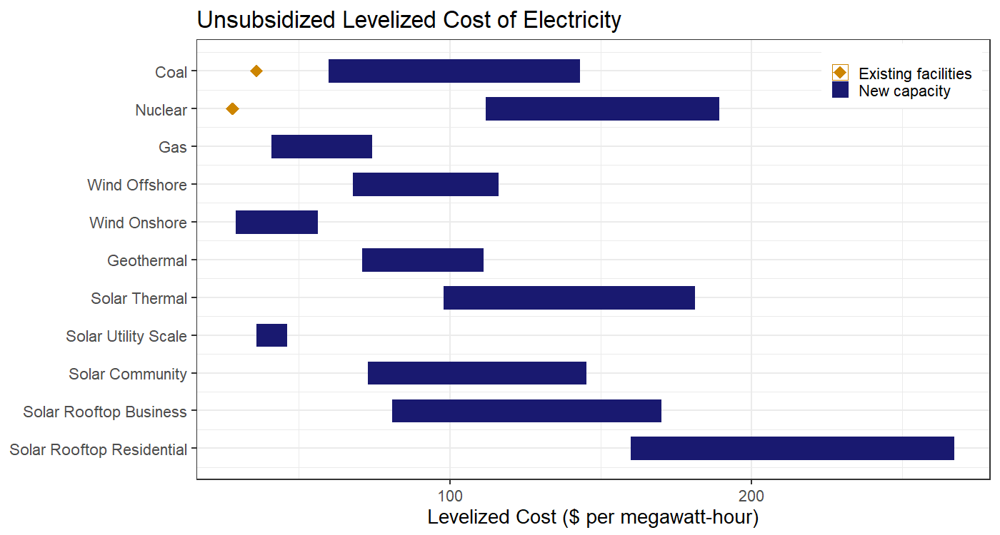
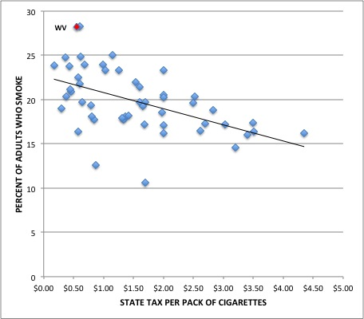
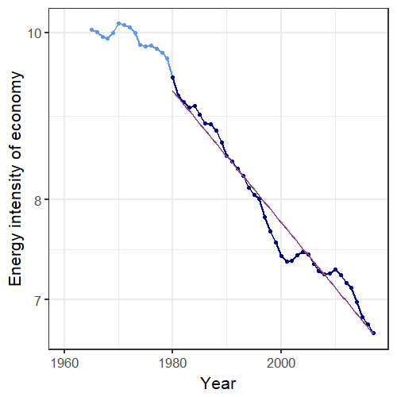
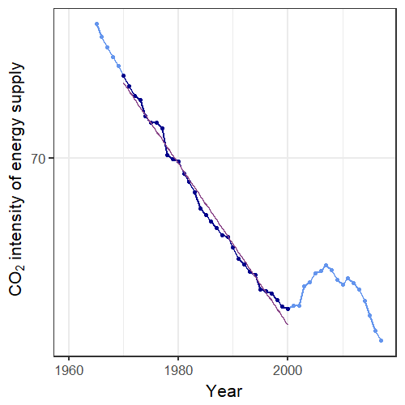
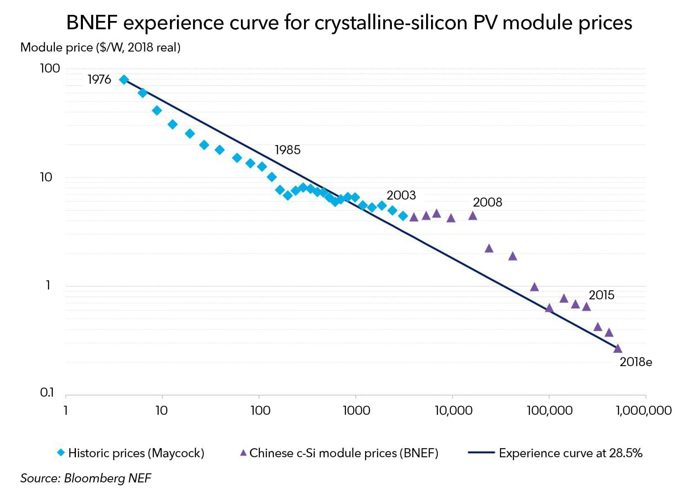

Pragmatism and Climate Policy
EES 3310/5310
Global Climate Change
Jonathan Gilligan
Class #38:
Monday Nov. 26
2018
Challenges of Decarbonization
Challenges of Decarbonization
- How hard will it be to reduce CO2 emissions?
- Nordhaus:
- What technology can replace fossil fuels?
- What policies can stimulate innovation, investment, production, purchase of clean technology?
- Pielke:
- The biggest challenge is cost: \(RE < C\)
- Make clean technology cheaper than fossil fuels and the problem is solved.
Perspective: US CO2 Emissions

Rate of Decarbonization

- 2009 policy goal: US emissions 83% less than 2005 by 2050
- ef must drop by 6.2% per year
- Actual rate has been about 2.2% per year
Implied Decarbonization

Cost of Decarbonization

Tax on death?
- What do you think of Pielke’s argument?

Challenge of decarbonizing

- Trend in e (1980–present): 0.9% per year.
- Trend in f (1970–2000): 0.5% per year.
- Trend stopped in 2000, but rapid decrease since around 2008.
- So far: Decarbonization driven much more by efficiency than clean energy.
- Rebound: greater efficiency → more consumption.
Energy Poverty
- 1.2 billion people (17% of planet) lack access to electricity
- 2.7 billion (38%) lack clean cooking facilities
- 95% in sub-Saharan Africa or developing Asia
Innovation

- Price has dropped from $80/Watt in 1976 to $0.25/Watt in 2018.
- Dropped 99.7% in 42 years
Innovation Policy
- Knowing price of CO2 will rise provides incentive to invest in R&D
- Valley of Death:
- Technology looks promising in laboratory
- Potential for big profits
- Many years, lots of money to turn laboratory device into product
- Product development might fail
- Product might not sell
- Competitors might copy product
- Valley of death
- Government support to cross valley of death
Pielke’s Policy Proposal:
- Competition within government
- Public-works model
- Demonstration projects
- Government as consumer of energy innovations
- $5/ton carbon tax ($0.04 per gallon gas)
- invest in clean-energy R&D
- Monitor progress
- Develop “plan B” (geoengineering)
Obliquity
- Appeal to people who don’t care about climate change
- Cheaper energy
- Reduce pollution (smog, etc.)
- Reduce dependence on foreign oil